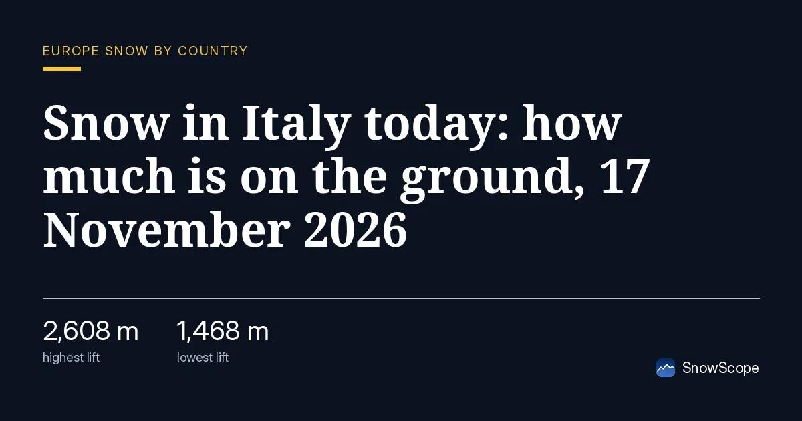
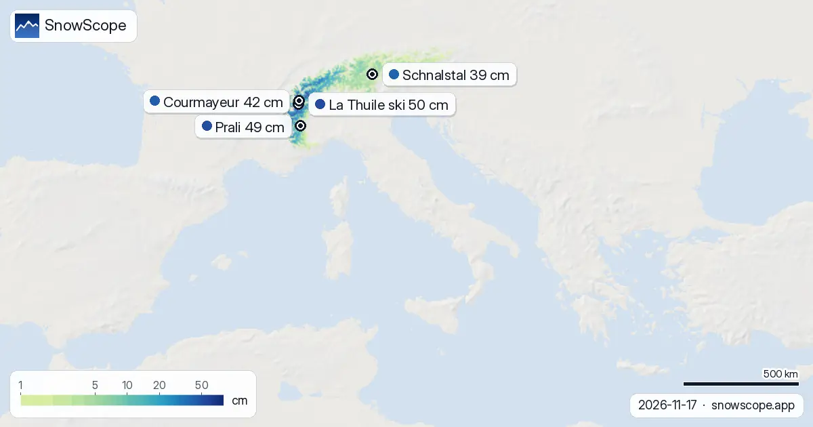

Italy loses 8,670 km² of snow in one day as mild weather brings thaw
Italy shed nearly 9,000 square kilometres of snow cover in a single day as mild air moved in and temperatures climbed above freezing. Yesterday's 21,210 km² of white ground fell to just 12,540 km² by 17 November, a stark reminder of how quickly snow vanishes when the balance tips toward thaw.
See the live snow forecast for La Thuile ski in the SnowScope appSnow depth, powder alerts and the 3D map, free.
Where the snow went
The drop of 8,670 km² in 24 hours tells a story of rapid melt across lowlands and mid-slopes. Measured at the station on 17 November, our snow model shows that snow cover shrunk from 23 percent of the mapped area to just 13 percent. This kind of sudden loss happens when mild air settles over mountains already stressed by sun angle and pressure.
The snow line rose sharply to around 2,000 metres. Below that height, almost all snow has gone: at 500–1,500 metres, cover is zero; between 1,500 and 2,000 metres, only 17 percent of the ground stays white. The water stored in that lost snow—roughly equivalent to what fell in the past week—has now run downhill into streams and reservoirs, boosting discharge across the Po and Alpine river systems.
| Resort | Snow depth | New snow, 72 h | Coming, next days | Top |
|---|---|---|---|---|
| La Thuile ski | 50 cm | 65 cm | 89 cm | 2,608 m |
| Prali | 49 cm | 18 cm | 32 cm | – |
| Courmayeur | 42 cm | 65 cm | 100 cm | 2,749 m |
| Schnalstal | 39 cm | 5 cm | 9 cm | 3,200 m |
| Passo Stelvio | 37 cm | 6 cm | 8 cm | 3,355 m |

Snow depth by altitude on 17 November
Above 2,000 metres, snow persists and deepens with height. Between 2,000 and 2,500 metres, the mean depth is 5 cm across 78 percent of the terrain. Above 2,500 metres, where our model covers 93,660 km² of Italian mountains, mean depth reaches 20 cm and 99 percent of the ground is snow-covered.
Skiers seeking reliable base will need to climb higher. Early-season snow is always thin and fragile. Rocks and bare patches remain common below 2,500 metres; the water content of what lies there has also been reduced by yesterday's thaw, making the snowpack less stable and more prone to further loss on mild days ahead.

The northwest holds most snow
The Aosta Valley is the standout: 134 cm of new snow fell there in 72 hours, a signal that cold, wet systems favoured the Alps' western flank before the thaw set in. The Piedmont Alps received 58 cm in the same period, still valuable, while the central Apennines saw only 21 cm. This gradient reflects both height and exposure to Atlantic moisture.
Among named resorts, La Thuile ski leads with 50 cm measured depth and 65 cm in 72 hours, while Courmayeur holds 42 cm but has 100 cm forecast for the next three days as new snow is expected to return. Prali has 49 cm but only modest fresh snow ahead. Passo Stelvio (37 cm) and Schnalstal (39 cm), both at higher elevations, have received less new snow in the recent spell.
Above normal—so far
Compared to past winters, Italy is running ahead of average. Courmayeur sits at 190 percent of its usual depth for mid-November; La Thuile is 121 percent. Even Prali, at 125 percent, has built an early cushion. This surplus can erode fast in a thaw, but it means the season is not starting from behind.
However, the highs seen in past years show the risk. Courmayeur's historical high for November is 51 cm; it now has 42 cm. Passo Stelvio peaks at 116 cm later in winter but stands at only 37 cm today. Early snow is a foundation, not a guarantee.
What comes next
The thaw will not last. Our model forecasts 48 cm of new snow in the next three days, with 24 cm likely on 19 November. The snowiest day overall in the week ahead appears to be 19 November. By then, the snow line should drop back down and the water balance will swing back toward storage rather than loss.
Across the following week, 58 cm is forecast for seven days out. Austria and Switzerland face similar mild air today but stand to gain more snow sooner. Austria's current leader, Kaprun, has 66 cm and expects 47 cm in a week; Switzerland's Zermatt has 47 cm but a remarkable 129 cm forecast for seven days. Italy will benefit from the same systems, but timing and local orography matter.
What this means for water and terrain
One warm day in November is not unusual, but the speed of snow loss underscores how vulnerable early-season cover is to temperature swings. The water released yesterday has already begun moving through the Alpine watershed. Reservoirs will fill a little more; streams will run faster. For skiers, it means checking recent conditions reports and knowing that rocks will be closer to the surface on south-facing slopes and lower elevations.
Safety depends on reading the specific mountain: check the official avalanche bulletin for your region before skiing off-piste, as fresh thaw and rapid snow loss can destabilise the pack. The snow is still young; its structure changes daily in these early weeks.
Tips for skiers
- Seek altitude: reliable snow begins above 2,000 metres. Below that, expect bare patches and thin cover after yesterday's melt.
- Move fast on south-facing slopes. Early snow thaws quickly in the sun; north-facing terrain will hold better until fresh snow arrives.
- Check the official avalanche bulletin before any off-piste skiing. The snowpack is young and thaw has weakened it; stability is uncertain.
- Watch for the new snow expected on 19 November. Base will improve sharply, but rocks may still be close to the surface on lower runs.
- Above 2,500 metres is your best bet for consistent depth. La Thuile and Courmayeur offer good access to that terrain in the northwest.
About these numbers
Resort snow depths are the deepest snow on the resort's upper slopes from the SnowScope snow model (about 1 km, run of 17 November); they are estimates for an area, not a measurement at one point. Station values are measurements on the date shown. Forecasts can change. Always read the official avalanche bulletin before going off-piste.
Cite this report
For research, teaching or the press: the numbers and charts are free to reuse under CC BY 4.0 with this citation.
SnowScope (2026), Italy loses 8,670 km² of snow in one day as mild weather brings thaw, https://snowscope.app/blog/en/2026/11/italy-snow-report-17-november-2026.html, accessed 2026-11-17
SnowScope (Atlas Labs). (2026, November 17). Italy loses 8,670 km² of snow in one day as mild weather brings thaw. SnowScope snow reports. https://snowscope.app/blog/en/2026/11/italy-snow-report-17-november-2026.html
BibTeX
@misc{snowscope2026italysnowreport17novembe,
author = {{SnowScope (Atlas Labs)}},
title = {Italy loses 8,670 km² of snow in one day as mild weather brings thaw},
year = {2026},
month = nov,
howpublished = {\url{https://snowscope.app/blog/en/2026/11/italy-snow-report-17-november-2026.html}},
note = {Published 2026-11-17 12:53 UTC; accessed 2026-11-17}
}· CC BY 4.0 · Methods, data and tools →
La Thuile ski: snow and temperature by height, this winter vs last (tools) →
Follow La Thuile ski
Free: a message when fresh snow is coming, and the forecast every morning.
More snow reports

In 24 of 46 winters, resorts on the Italian and southern French side of the Alps had a relatively bigger winter than the northern side. The chart, the big years and the weather behind them.

Monterosa Ski holds 99 cm, 38% above normal for mid-November, as Italian Alps gain early snow on 16 November.

Compare December snow odds and checked lift pass prices starting at 40.00 EUR across Italian ski areas for your weekend drive.